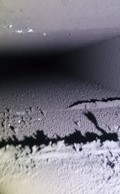
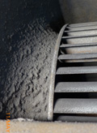

粉塵PM2.5防治
粉塵是指懸浮在空氣中的微粒子，一般室內不易有大量粉塵，在工作場所比較容易有可能，或是裝修中房屋，在室內空氣品質中其探討粉塵多為通風管道及裝潢、衣物、人體或戶外引入所造成，然而大家熟知之PM2.5粉塵，基本上也是由室外引入到在室內中。
一般而言，曝露於有害粉塵中的時間愈長，危險愈大，又因都市人類在市內時間可長達90%，因此室內空氣品質就顯相當重要。當您家有3D Printer及Laser printer就會製造出PM2.5，其中以3D Printer量是最多，絕對會讓您家裡空氣品質汙染達超標級。


(PM5)5μ 以上大都是沈著在上部鼻腔、呼吸道。
(PM3)3μ 沈著於呼吸道。(危害風險高)
(PM 1)1μ 沈著於肺泡。(危險此危害高)
(PM0.1) 0.1μ 以下與呼吸空氣進出，甚少沈著於肺泡。
1cm=10mm=10,000um,頭髮大約在40-70 um間。
空調管道其PM2.5(2.5μ) 也相當多，尤其是在剛開機前的一小時其量是最高。其中戶外之PM2.5還夾雜、吸附有害之化學物質，這對人體危害更大。

減少室內PM2.5方法
室內PM2.5目前主要來源還是以油煙為主，比較多的地方為廚房，戶外雖然有時空氣不好，但其懸浮微粒，進入室內其量會被紗窗及關窗方式影響，不會想像中高(除靠近大馬路車水馬龍處)，雖然會造成室內有些灰塵但並不會太高，但是如果為中央空調部分，長期下來累積，那有可能在剛啟動空調前10-30分鐘時候，其量會高些，因此中央空調設備定期更換清洗過濾網就非常重要。
1.空調濾網及管道部分定期維護。
2.加裝紗窗(防塵紗窗首選，但更需常清潔)。
3.室外空氣不良時避免開窗(當有氣象局發布空氣品質不良警告，或是居住在大馬路旁交通尖峰時刻)。
4.使用除塵空氣清淨機(並且要每2-4周清洗初級濾網一次，以及定期更換內部濾網)。